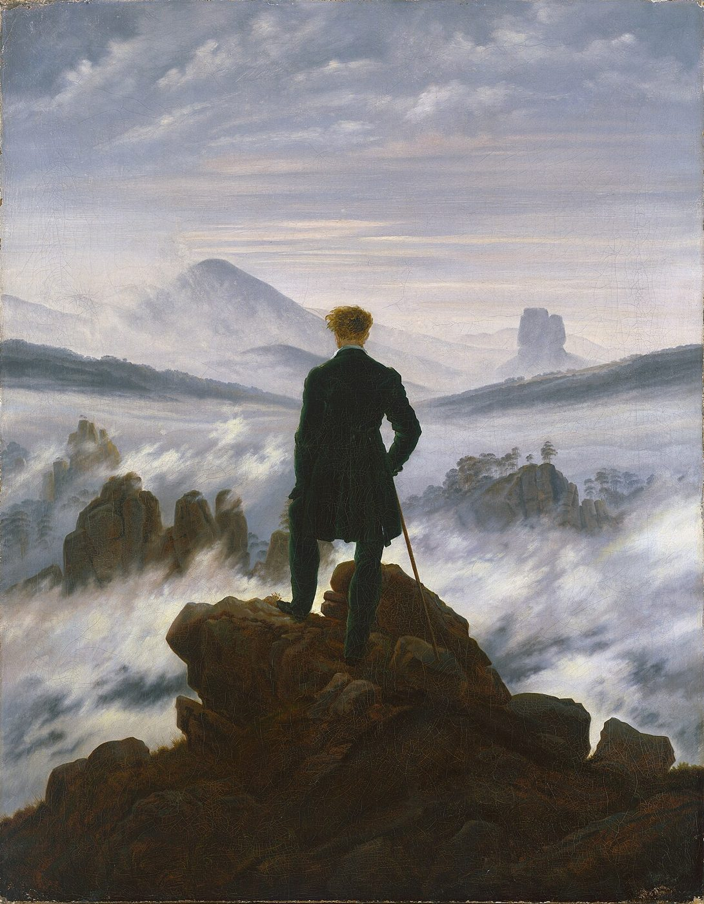
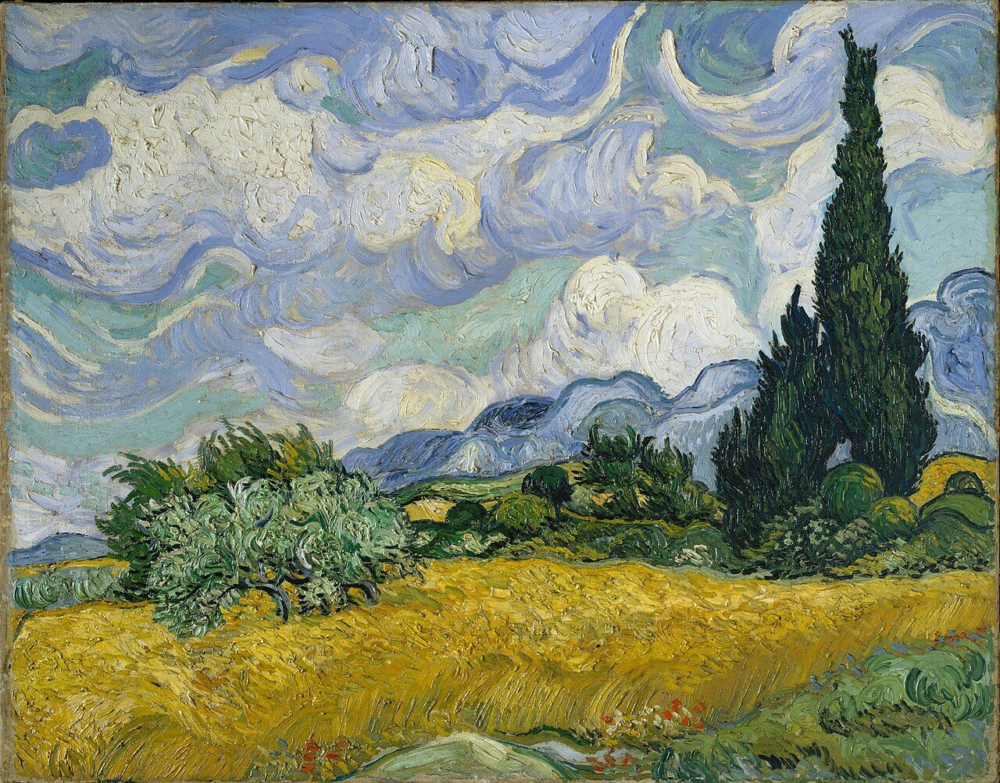
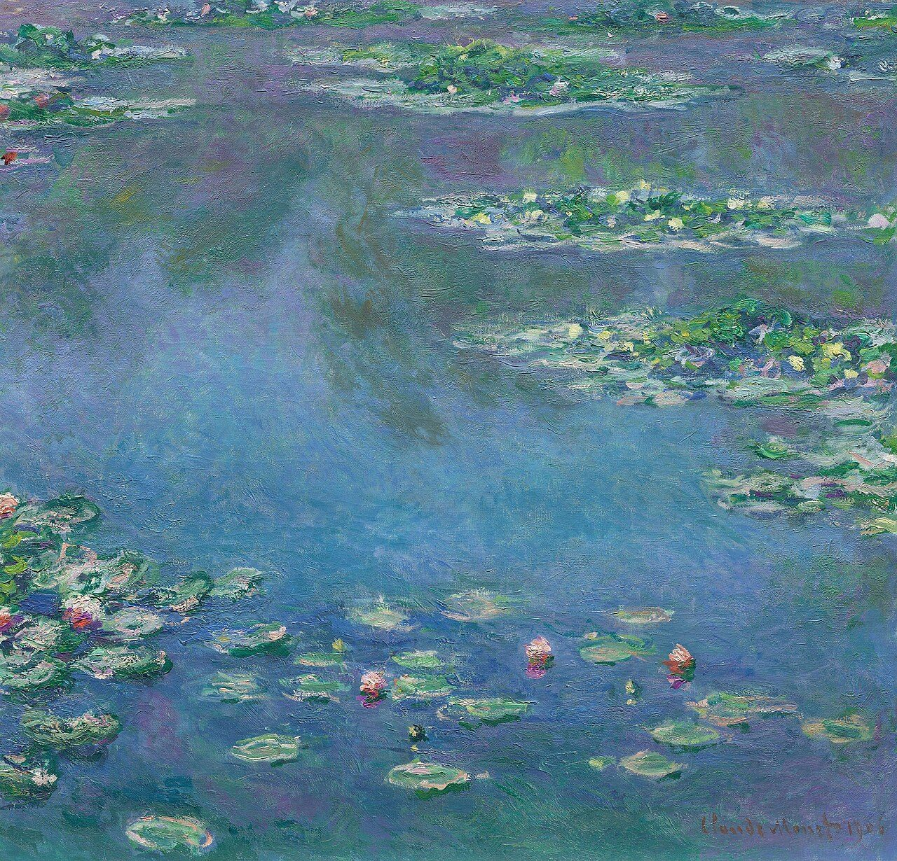
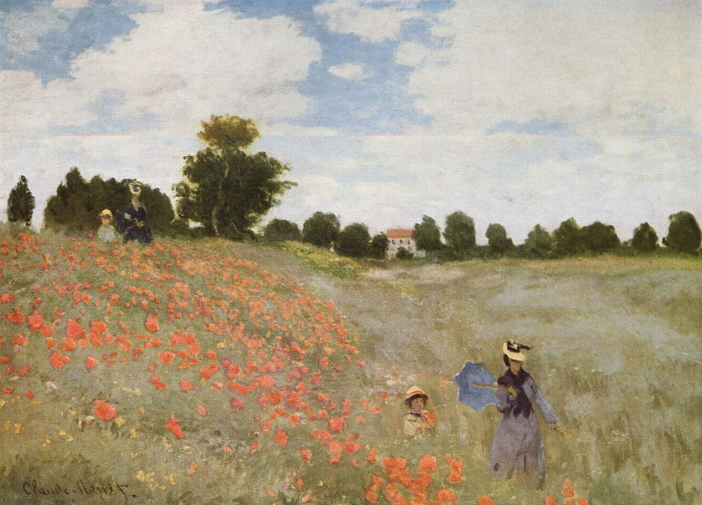
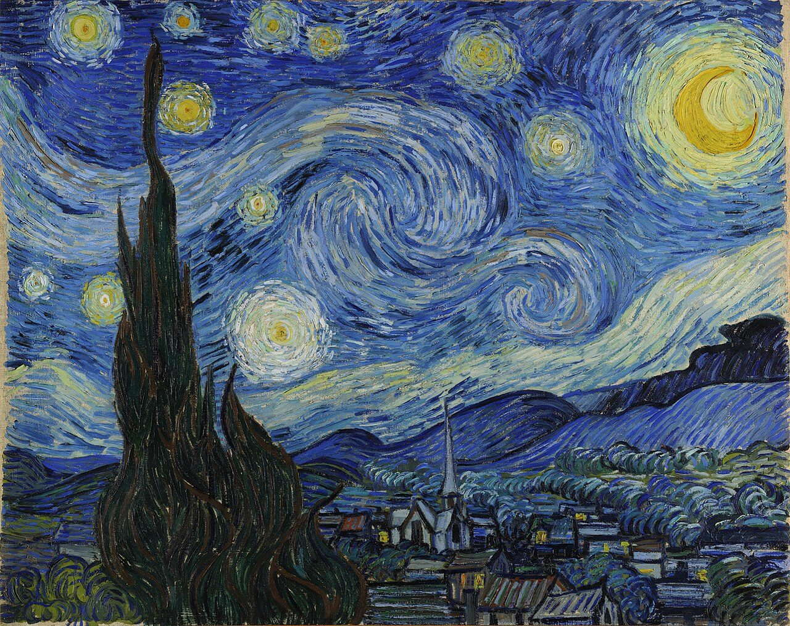

L'essentiel en trois règles
The essentials in three rulesLe subjonctif vient du sens du verbe
Ce n'est pas le conditionnel qui demande le subjonctif : c'est le sens du verbe principal. Un souhait, un conseil, une nécessité, un sentiment, un jugement ou une possibilité demandent toujours le subjonctif.
It isn't the conditional that triggers the subjunctive: it's the meaning of the main verb. A wish, advice, a necessity, a feeling, a judgement or a possibility always takes the subjunctive.Seulement deux subjonctifs
En français moderne, après un conditionnel, on utilise le subjonctif présent ou le subjonctif passé. L'imparfait du subjonctif (« qu'il vînt ») appartient à la langue littéraire.
In modern French, after a conditional you use the present or the past subjunctive. The imperfect subjunctive (« qu'il vînt ») belongs to literary language.Même sujet : l'infinitif
Si les deux verbes ont le même sujet, on n'utilise pas « que » + subjonctif, mais l'infinitif : « Je voudrais partir », jamais « Je voudrais que je parte ».
If both verbs have the same subject, you don't use « que » + subjunctive but the infinitive: « Je voudrais partir », never « Je voudrais que je parte ».Conditionnel présent + subjonctif présent
Il faudrait que tu viennes.
Conseil, souhait ou possibilité, aujourd'hui ou demain, dit avec délicatesse.
Advice, a wish or a possibility, now or later, said tactfully.BConditionnel passé + subjonctif présent
J'aurais préféré que tu viennes.
Regret ou reproche sur le passé : les deux actions ont lieu au même moment.
Regret or reproach about the past: both actions happen at the same time.CConditionnel passé + subjonctif passé
J'aurais préféré que tu sois venu.
Regret sur le passé : l'action au subjonctif a eu lieu avant.
Regret about the past: the action in the subjunctive happened earlier.
Caspar David Friedrich, Le Voyageur contemplant une mer de nuages, vers 1818Conseiller et souhaiter avec délicatesse
Giving advice and wishing tactfullyComparez
CompareIl faut que tu partes.
Obligation directe, presque un ordre.
A direct obligation, almost an order.Il faudrait que tu partes.
Conseil plus doux, plus poli.
Softer, more polite advice.Les tournures les plus utiles
The most useful phrasesConseiller
Giving adviceSouhaiter
WishingJuger, réagir
Judging, reactingLa possibilité
PossibilityExemples
ExamplesIl vaudrait mieux que tu réserves avant de partir : le musée est souvent complet.
It would be better for you to book before you go: the museum is often full.Il suffirait que vous preniez le train de huit heures pour voir le lever du soleil sur le lac.
You would only need to take the eight o'clock train to see the sunrise over the lake.Il serait temps que nous fassions quelque chose pour protéger ces forêts.
It's about time we did something to protect these forests.Je trouverais normal que les artistes soient mieux payés.
I would find it fair for artists to be better paid.Il se pourrait que l'exposition soit prolongée jusqu'en mars.
The exhibition might be extended until March.Le bon subjonctif
Complète avec le verbe au subjonctif présent.Complete with the verb in the present subjunctive.
- 1We ought to take the time to visit the Fontainebleau forest.
Il faudrait que nous (prendre) le temps de visiter la forêt de Fontainebleau.
- 2It would be better for you to know the opening hours before going there.
Il vaudrait mieux que tu (savoir) les horaires avant d'y aller.
- 3She would only need to make a little effort to finish her painting.
Il suffirait qu'elle (faire) un petit effort pour finir son tableau.
- 4It's about time you went to see this exhibition: it ends on Sunday.
Il serait temps que vous (aller) voir cette exposition : elle se termine dimanche.
- 5I'd like the guide to be able to show us the sketches.
J'aimerais que le guide (pouvoir) nous montrer les esquisses.
- 6There might be fog on the mountain tomorrow morning.
Il se pourrait qu'il y (avoir) du brouillard demain matin sur la montagne.
- 7I'd find it a pity if you didn't come to the private view.
Je trouverais dommage que vous ne (venir) pas au vernissage.
Subjonctif, indicatif ou infinitif ?
Choisis la bonne forme.Choose the correct form.
- 1I'd like to paint this landscape before nightfall.
Je voudrais …… ce paysage avant la nuit.
Même sujet (je… je) : on utilise l'infinitif.Same subject: use the infinitive.
- 2It would be useful for you to know the painters' names.
Il serait utile que tu …… le nom des peintres.
« Il serait utile que » exprime un jugement : subjonctif.« Il serait utile que » expresses a judgement: subjunctive.
- 3I'm sure the weather will be nice tomorrow.
Je suis sûr qu'il …… beau demain.
La certitude demande l'indicatif.Certainty takes the indicative.
- 4The museum might be closed on Monday.
Il se pourrait que le musée …… fermé lundi.
« Il se pourrait que » exprime une possibilité : subjonctif.« Il se pourrait que » expresses a possibility: subjunctive.
- 5I'd be delighted if you came to dinner with us.
Ça me ferait plaisir que vous …… dîner avec nous.
Un sentiment, deux sujets différents : subjonctif.A feeling, two different subjects: subjunctive.
- 6It would be better to leave early to avoid the crowds.
Il vaudrait mieux …… tôt pour éviter la foule.
Sens général : l'infinitif. Avec « que », il faudrait le subjonctif (« qu'on parte »).General meaning: the infinitive. With « que » you would need the subjunctive (« qu'on parte »).
À toi de parler
Your turn to speakRéponds à l'oral, en phrases complètes. Utilise les structures proposées.Answer out loud, in full sentences. Use the suggested structures.
Un ami veut quitter son travail pour devenir peintre. Donne-lui trois conseils.
A friend wants to quit his job to become a painter. Give him three pieces of advice.Ta ville veut construire un parking à la place d'un parc. Que faudrait-il faire ? Que voudrais-tu que les habitants fassent ?
Your town wants to build a car park instead of a park. What should be done? What would you like the residents to do?Décris ton week-end idéal dans la nature, avec les personnes que tu aimes.
Describe your ideal weekend in nature with the people you love.
Vincent van Gogh, Champ de blé avec cyprès, 1889Regretter et reprocher
Regrets and reproachesLes tournures les plus utiles
The most useful phrasesLe regret, le souhait
Regret, wishLa réaction
ReactionExemples
ExamplesJ'aurais préféré que tu viennes un peu plus tôt : la lumière était magnifique.
I would have preferred you to come a little earlier: the light was magnificent.Il aurait été dommage que vous ratiez ce coucher de soleil.
It would have been a pity for you to miss this sunset.Ça m'aurait étonné qu'il réussisse sans travailler.
I would have been surprised if he had succeeded without working.Je n'aurais jamais cru qu'il soit capable de peindre ainsi.
I would never have believed he was capable of painting like that.Il aurait fallu que
It should have…= « j'aurais dû », « tu aurais dû »… On dit ce qui était nécessaire et qui n'a pas été fait.= « I should have », « you should have »… You say what was necessary and wasn't done.
Il aurait fallu que nous partions plus tôt.
We should have left earlier. (= Nous aurions dû partir plus tôt.)Il n'aurait pas fallu qu'il prenne ce chemin.
He shouldn't have taken that path.Il aurait mieux valu que
It would have been better…= « il aurait été préférable que ». On compare ce qui s'est passé avec une meilleure solution.= « it would have been preferable ». You compare what happened with a better option.
Il aurait mieux valu que tu prennes un parapluie.
It would have been better for you to take an umbrella.Le cas d'espérer
The case of espérerNormalement, « espérer » est suivi de l'indicatif. Mais au conditionnel passé, quand l'espoir a été déçu, il est suivi du subjonctif.Normally « espérer » is followed by the indicative. But in the past conditional, when the hope was disappointed, it is followed by the subjunctive.
J'espère qu'il viendra.
I hope he'll come. (indicatif)J'aurais espéré qu'il vienne.
I would have hoped he'd come. (subjonctif)Regrets au passé
Mets le premier verbe au conditionnel passé et le second au subjonctif présent.Put the first verb in the past conditional and the second in the present subjunctive.
Écris seulement la forme du verbe, sans le sujet.Just write the verb form, without the subject.
- 1We would have preferred the guide to speak more slowly.
Nous (préférer) que le guide (parler) plus lentement.
- 2They would have liked their friends to come with them to Provence.
Ils (aimer) que leurs amis (venir) avec eux en Provence.
- 3I would have wished you to see this painting for real.
J'(souhaiter) que tu (voir) ce tableau en vrai.
- 4You should have left before the storm.
Il (falloir) que vous (partir) avant l'orage.
- 5It would have been better for you to book in advance.
Il (être) préférable que tu (faire) tes réservations à l'avance.
- 6I would have been surprised if they had been late: they're always on time.
Ça m'(étonner) qu'ils (être) en retard : ils sont toujours ponctuels.
Espérer, devoir, falloir
Choisis la bonne forme.Choose the correct form.
- 1I hope you'll have time to come.
J'espère que tu …… le temps de venir.
« Espérer » au présent : indicatif.« Espérer » in the present: indicative.
- 2I would have hoped you'd have time to come.
J'aurais espéré que tu …… le temps de venir.
« Espérer » au conditionnel passé : subjonctif.« Espérer » in the past conditional: subjunctive.
- 3She was hoping the weather would be nice for the hike.
Elle espérait qu'il …… beau pour la randonnée.
« Espérer » à l'imparfait reste suivi de l'indicatif (ici le futur dans le passé).« Espérer » in the imperfect still takes the indicative (here the future in the past).
- 4We would have hoped the museum would stay open later.
Nous aurions espéré que le musée …… ouvert plus tard.
Conditionnel passé + espérer : subjonctif.Past conditional + espérer: subjunctive.
- 5I should have taken my camera.
Il aurait fallu que je …… mon appareil photo.
« Il aurait fallu que » : toujours le subjonctif.« Il aurait fallu que »: always the subjunctive.
- 6You should have left earlier.
Tu …… partir plus tôt.
Devant un infinitif, on utilise « devoir ». « Il aurait fallu » demande « que » + subjonctif.Before an infinitive, use « devoir ». « Il aurait fallu » needs « que » + subjunctive.
À toi de parler
Your turn to speakRéponds à l'oral, en phrases complètes. Utilise les structures proposées.Answer out loud, in full sentences. Use the suggested structures.
Raconte une visite ou un voyage qui ne s'est pas passé comme prévu. Qu'est-ce que tu aurais préféré ? Qu'est-ce qu'il aurait fallu faire ?
Tell me about a visit or a trip that didn't go as planned. What would you have preferred? What should have been done?Pense à une décision prise dans ta ville ou dans ton pays (environnement, urbanisme, culture). Qu'en penses-tu ?
Think of a decision made in your town or country (environment, urban planning, culture). What do you think of it?Un ami a oublié ton anniversaire. Réagis avec élégance.
A friend forgot your birthday. React gracefully.
Claude Monet, Nymphéas, 1906Quand l'action a eu lieu avant
When the action happened earlierCela m'aurait étonné (hier) qu'il ne soit pas venu (avant-hier).
I would have been surprised (yesterday) if he hadn't come (the day before).Exemples
ExamplesCela m'aurait étonné qu'elle n'ait pas vu cette exposition : elle adore Monet.
I would have been surprised if she hadn't seen this exhibition: she loves Monet.Nous aurions préféré que ces arbres n'aient jamais été abattus.
We would have preferred these trees never to have been cut down.J'aurais aimé que tu aies lu le livre avant de voir le film.
I would have liked you to have read the book before seeing the film.Comparez
CompareJ'aurais préféré qu'il vienne.
Même moment : j'aurais voulu sa présence à ce moment-là.
Same moment: I would have wanted him there at that time.J'aurais préféré qu'il soit venu plus tôt.
Avant : son arrivée aurait dû avoir lieu avant.
Earlier: his arrival should have happened before.Présent ou passé ?
Regarde les indications de temps et choisis le subjonctif présent ou le subjonctif passé.Look at the time clues and choose the present or the past subjunctive.
- 1Last night, I would have been surprised if she had forgotten our appointment from last week.
Hier soir, cela m'aurait étonné qu'elle …… notre rendez-vous de la semaine dernière.
Le rendez-vous a eu lieu avant : subjonctif passé.The appointment came earlier: past subjunctive.
- 2During the hike, we would have preferred it to rain less.
Pendant la randonnée, nous aurions préféré qu'il …… moins.
La pluie et la randonnée ont lieu au même moment : subjonctif présent.The rain and the hike happen at the same time: present subjunctive.
- 3At the time of the concert, I would have liked you to be there.
Au moment du concert, j'aurais aimé que tu …… là.
Même moment : subjonctif présent.Same moment: present subjunctive.
- 4When I saw him, I would have been surprised if he had already read the book I'd given him the day before.
Quand je l'ai vu, j'aurais été surpris qu'il …… déjà le livre que je lui avais offert la veille.
« Déjà » : l'action est terminée avant. Subjonctif passé.« Déjà »: the action was finished earlier. Past subjunctive.
- 5She would have been delighted if her friends came to her exhibition tomorrow.
Elle aurait été ravie que ses amis …… à son exposition demain.
L'action est à venir : subjonctif présent.The action is still to come: present subjunctive.
Le subjonctif passé
Complète avec le verbe au subjonctif passé.Complete with the verb in the past subjunctive.
- 1I would have been surprised if you had finished this novel in a single night.
Cela m'aurait étonné que tu (finir) ce roman en une seule nuit.
- 2I would have preferred you to have left before the storm.
J'aurais préféré que vous (partir) avant la tempête.
- 3It would have been a pity if she had missed the sunset.
Il aurait été dommage qu'elle (manquer) le coucher de soleil.
- 4We would have liked the painter to have signed this painting.
Nous aurions aimé que le peintre (signer) ce tableau.
- 5I would have been surprised if they had got lost in the forest: they know every path.
Ça m'aurait surpris qu'ils (se perdre) dans la forêt : ils connaissent chaque sentier.
- 6It would have been better if we had booked our seats the day before.
Il aurait mieux valu que nous (réserver) nos places la veille.
À toi de parler
Your turn to speakRéponds à l'oral, en phrases complètes. Utilise les structures proposées.Answer out loud, in full sentences. Use the suggested structures.
Pense à un moment important de ta vie. Qu'est-ce que tu aurais aimé que quelqu'un ait fait avant ?
Think of an important moment in your life. What would you have liked someone to have done beforehand?Van Gogh n'a vendu presque aucun tableau de son vivant. Qu'en penses-tu ?
Van Gogh sold almost no paintings in his lifetime. What do you think about it?
Claude Monet, Les Coquelicots, 1873Mise en pratique
Putting it into practiceUn message après l'exposition
Complète le message avec la bonne forme du verbe : subjonctif présent, subjonctif passé ou indicatif.Complete the message with the right form of the verb: present subjunctive, past subjunctive or indicative.
Coucou,
Je suis allée voir l'exposition Monet dimanche. J'aurais aimé que tu (venir) avec moi ! Il aurait fallu que nous (réserver) plus tôt, car il y avait une foule incroyable. Je n'aurais jamais cru qu'une exposition (pouvoir) attirer autant de monde.
Bref, il vaudrait mieux que tu (aller) la voir un jour de semaine. Il se pourrait même qu'elle (être) prolongée jusqu'en mars. J'aurais espéré que le catalogue (être) moins cher, mais je l'ai acheté quand même !
Ça m'aurait étonnée que tu (voir) les Nymphéas en vrai avant moi : tu n'en as jamais parlé ! Il suffirait que tu me (dire) quand tu es libre, et je t'y accompagne. J'espère que tu (pouvoir) venir !
Bises,
Camille
Traduction · Translation
Hi, I went to see the Monet exhibition on Sunday. I'd have liked you to come with me! We should have booked earlier, because there was an incredible crowd. I'd never have believed an exhibition could draw so many people. Anyway, it would be better for you to go on a weekday. It might even be extended until March. I'd have hoped the catalogue would be cheaper, but I bought it anyway! I'd have been surprised if you had seen the Water Lilies for real before me: you've never mentioned it! You'd only need to tell me when you're free, and I'll go with you. I hope you'll be able to come! Love, Camille

Vincent van Gogh, La Nuit étoilée, 1889Réflexion finale
Final reflectionFaudrait-il que l'art soit utile ?
Should art have to be useful?Aurait-il mieux valu que l'humanité ne découvre jamais certaines vérités ?
Would it have been better if humanity had never discovered certain truths?Choisis une question. Donne ton avis en quelques phrases, à l'oral puis à l'écrit, et utilise au moins quatre structures de la leçon.Choose one question. Give your opinion in a few sentences, first orally then in writing, and use at least four structures from the lesson.
Ton texte est enregistré automatiquement. · Your text is saved automatically.
À revoir
To reviewIci apparaissent les phrases où tu t'es trompé·e ou que tu as dû regarder dans les réponses. Clique sur la règle pour la relire.Here you'll find the sentences you got wrong or had to look up in the answers. Click the rule to read it again.
Rien à revoir pour le moment. · Nothing to review yet.